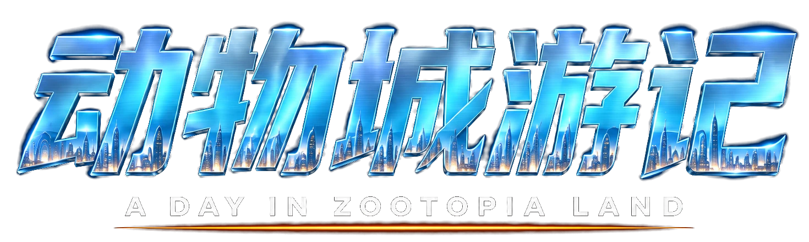

☀ 白天
▶ 自动游览
⛶ 俯瞰
W
A
S
D
行走
Shift
快走 鼠标 环视
N
日夜
T
自动游览
O
俯瞰
F
烟花
M
地图
H
隐藏界面
R
回到路上
/
显示按键
上海迪士尼 · 疯狂动物城园区 · 虚拟游览
加载中…
W
A
S
D
行走
鼠标 环视
N
白天 / 黄昏 / 夜晚
F
夜里看烟花
H
隐藏界面
爱好者制作的非官方还原，仅供个人游览，不作商用。Zootopia / 疯狂动物城及相关名称归 Disney 所有；模型不含官方角色形象与商标图案。